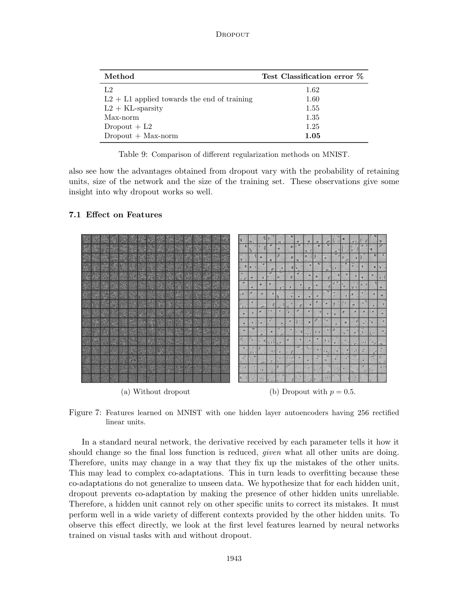
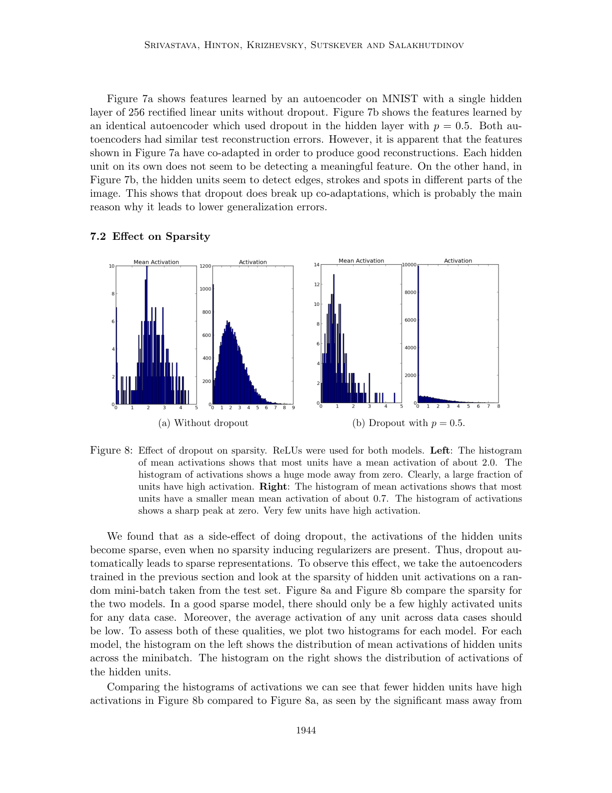
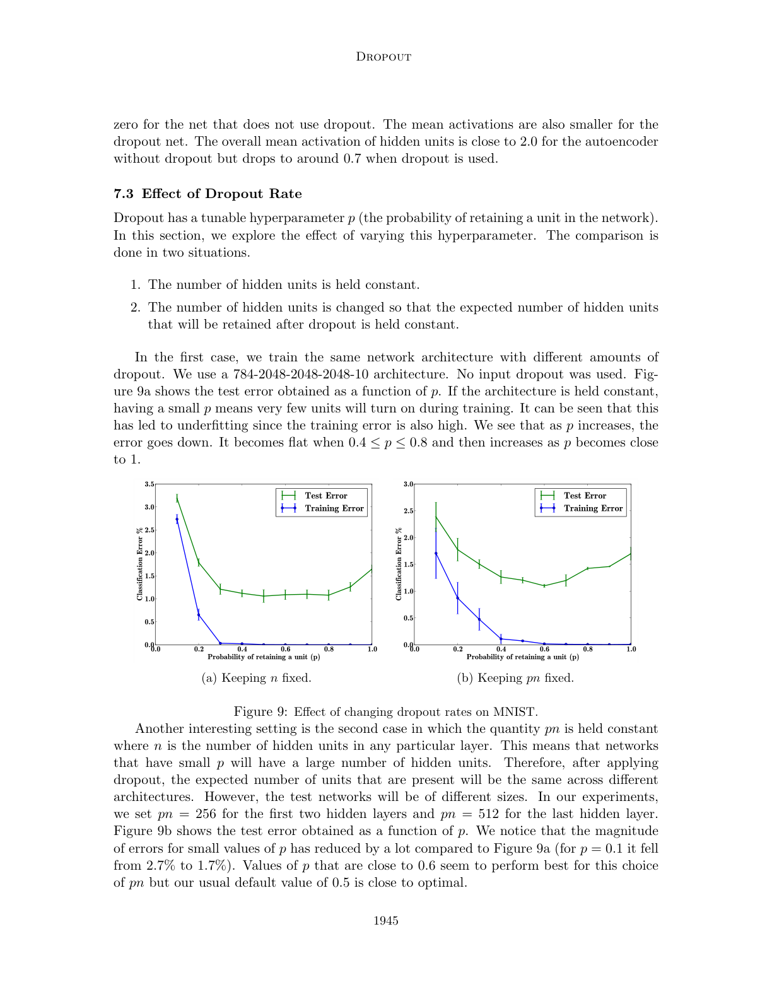
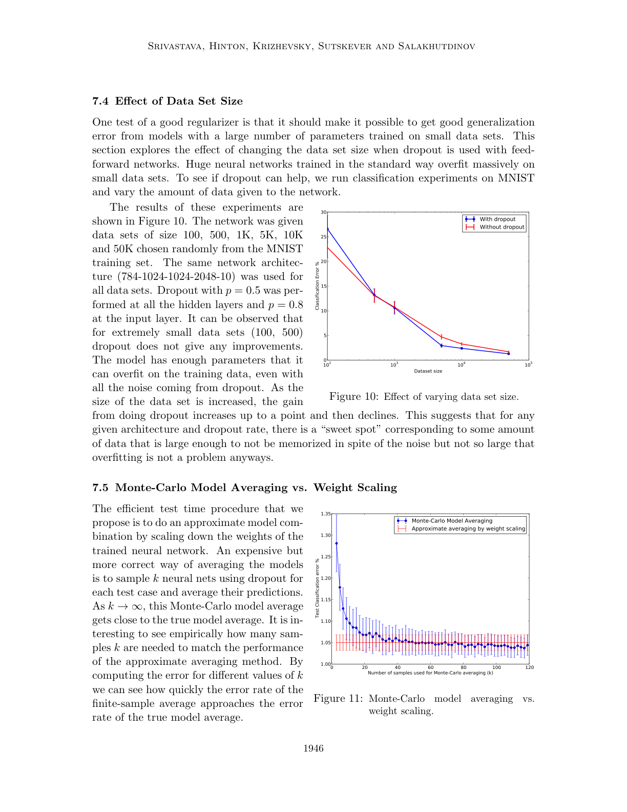
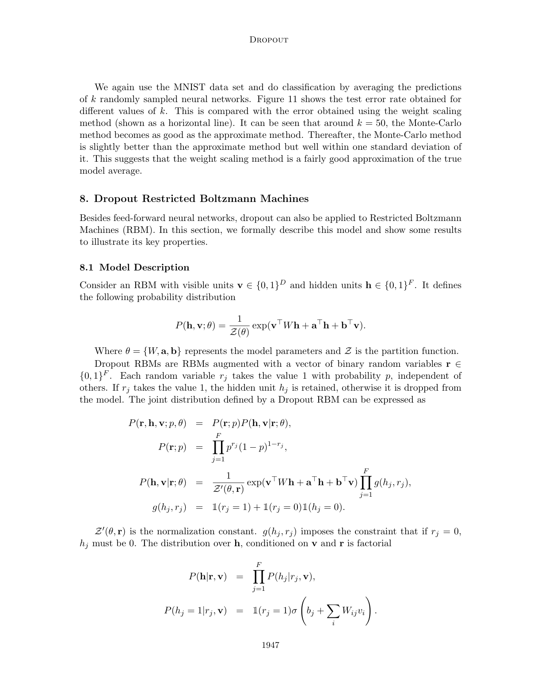
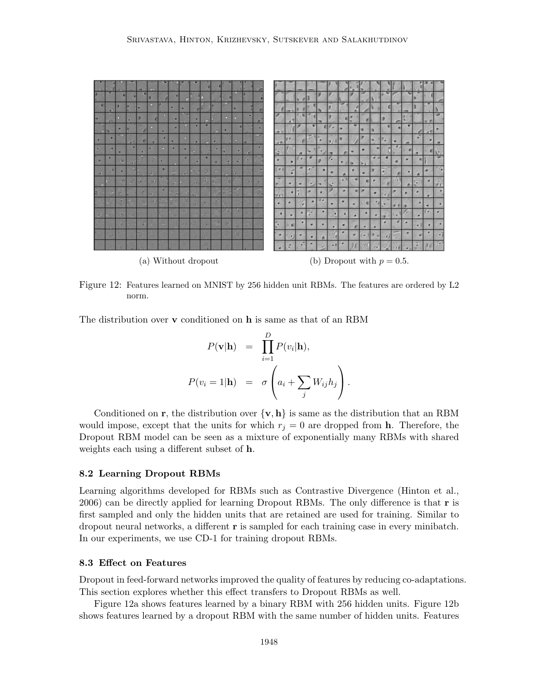
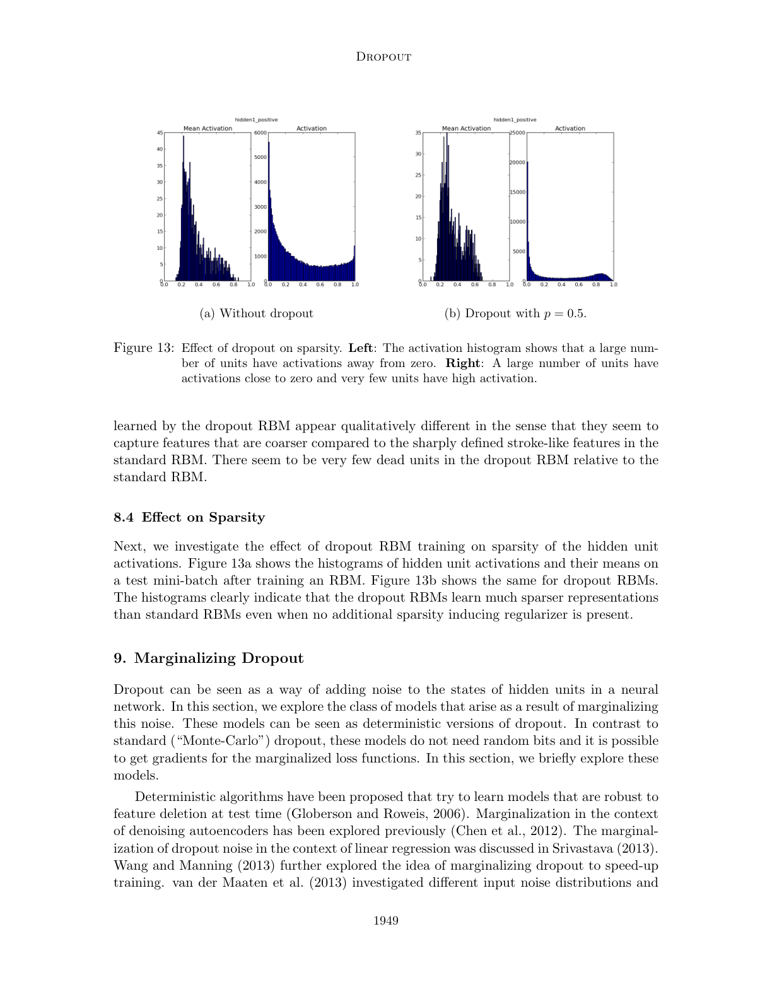
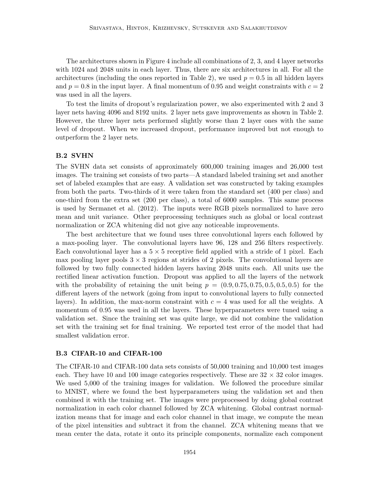

Dropout: a simple way to prevent neural networks from overfitting

| Architecture Type | Regularization Technique for Neural Networks |
|---|---|
| Key Innovation | Randomly omitting neurons during training to prevent co-adaptation. |
| Performance Metric | Significant reduction in generalization error across MNIST, ImageNet, and other benchmarks. |
| Computational Efficiency | Very low overhead during training; simplifies to a simple weight scaling at test time. |
| Venue | Journal of machine learning research |
| Year | 2014 |
| Citations | 42812 |
| DOI | Link |
Dropout: A Simple Way to Prevent Neural Networks from Overfitting introduced one of the most effective and widely used regularization techniques in deep learning. By randomly 'dropping out' units (setting their activations to zero) during training, the authors demonstrated that neural networks can be made significantly more robust and less prone to co-adaptation of neurons. This simple yet powerful idea effectively trains an ensemble of many different 'thinned' networks, leading to substantial improvements in generalization across a wide range of domains, including vision, speech, and text.
The Problem of Co-adaptation
Deep neural networks with a large number of parameters are incredibly flexible and powerful, but this power comes with a high risk of overfitting. In a standard network, neurons may develop complex 'co-adaptations' where a neuron only performs well in the presence of specific other neurons.
This leads to a fragile system that captures the noise in the training data rather than the underlying signal. Dropout breaks these co-adaptations by making the presence of any particular neuron unreliable. As a result, each neuron is forced to learn features that are useful in conjunction with many different random subsets of other neurons.
The Dropout Procedure
During training, Dropout involves zeroing out the output of each hidden neuron with a fixed probability $p$ (commonly 0.5). For each training case, a new 'thinned' network is sampled by randomly removing neurons and their incoming and outgoing connections.
At test time, it is not practical to average the predictions of all possible thinned networks. Instead, the authors proposed a simple 'weight scaling' heuristic: use the full network but scale the outgoing weights by the probability $p$. This ensures that the expected input to a neuron at test time is the same as it was during training, providing an efficient approximation to the ensemble average.
Dropout as Model Averaging
A key theoretical insight of the paper is that Dropout can be viewed as a form of model averaging. A network with $n$ units can be seen as a collection of $2^n$ possible thinned networks. Training with Dropout is equivalent to training this massive ensemble where all models share weights.
This 'ensemble' perspective explains why Dropout is so effective: it combines the strengths of many different architectures while only requiring the training time of a single model. The authors showed that this is significantly more powerful than other regularization methods like weight decay or early stopping.
Empirical Success and Generalization
The paper provides extensive experimental evidence for Dropout's effectiveness. On the MNIST dataset, Dropout achieved a new record error rate of 1.05%. On the ImageNet LSVRC-2012 competition, adding Dropout to AlexNet significantly reduced the top-5 error rate.
Beyond computer vision, Dropout was shown to improve performance on speech recognition tasks and various NLP benchmarks. Its simplicity and consistent results have made it a standard component of almost every modern deep learning architecture, from simple MLPs to complex Transformers.
Concept Breakdown
A version of the original neural network with a random subset of its neurons removed.
A state where neurons become highly dependent on each other to produce correct outputs, leading to poor generalization.
The technique of adjusting weights at test time to account for the fact that all neurons are present, whereas only a subset were present during training.
The process of combining the predictions of multiple models to achieve better performance than any single model.
The probability distribution used to decide whether each individual neuron is kept or dropped during a training step.
Mathematics
Training Activation
| Symbol | Meaning |
|---|---|
| $p$ | Probability of keeping a neuron (retention rate) |
| $r$ | A random binary mask |
Test Time Scaling
| Symbol | Meaning |
|---|---|
| $W$ | The weight matrix learned during training |
Figures and Explanations

Comparison between a standard neural network and a network after applying Dropout, showing the random omission of units and connections.









